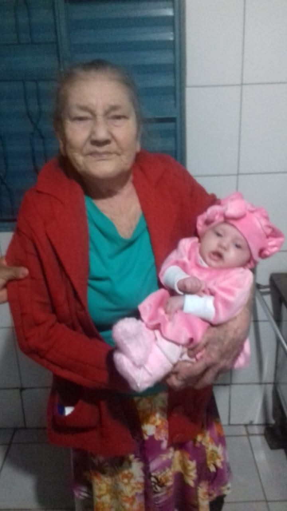
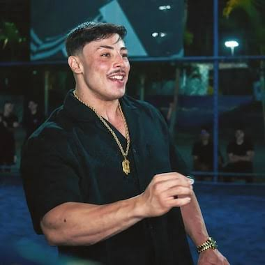
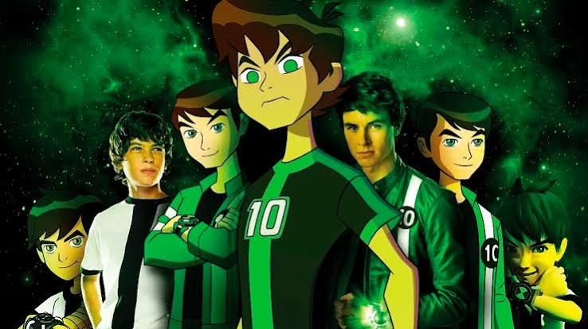

ARQUIVO PESSOAL · REGISTRO 2026
UMA VIDA INTEIRA CABE EM UM PONTO AZUL
Além do
horizonte.
Entre o primeiro dia de aula e a última chamada, existe um universo inteiro. Este é o meu.
INICIAR A VIAGEM↘que transcende as dimensões do tempo e do espaço.”— INTERESTELAR
UM PEQUENO PASSO, UM UNIVERSO
O tempo passou.
As marcas ficaram.
Minha história na escola não aconteceu em linha reta. Teve gravidade, turbulência, encontros que mudaram a rota e pessoas que foram estrelas quando eu precisei encontrar o caminho.
Do Jardim de Infância ao último ano do Ensino Médio, cada fase deixou uma luz viajando até aqui. Este arquivo é um jeito de olhar para trás — e entender o quanto cresci.
PEQUENOS PONTOS DE LUZ
Momentos que
ficaram comigo.
Fotografias que guardam um pedaço desta viagem. Todas aparecem juntas; toque em uma para ampliar.
CADA INTERESSE, UM MUNDO
O que me mantém
em movimento.
Selecione um planeta para
descobrir uma parte de mim.
Cada mundo guarda uma coisa que faz parte de quem eu sou.

PARA A MINHA AVÓ
Há presenças que
nem o tempo apaga.
Algumas pessoas continuam perto, mesmo depois de partirem. O amor que recebi da minha avó segue comigo — nas lembranças, no que aprendi com ela e em tudo que ainda levo para a vida.
Este vídeo é uma homenagem e um abraço em forma de memória.

“SE EU ME DEDICO 100%
NÃO TEM COMO EU PERDER”
“OFF É OFF
E PRÉ É PRÉ”
EM MEMÓRIA DE GABRIEL GANLEY
Algumas forças
nos ajudam a voltar.
Gabriel Ganley me inspirou a treinar, a persistir e a acreditar que era possível atravessar dias difíceis. Em um período em que eu lutava contra a depressão, a motivação que encontrei em sua trajetória me ajudou a dar passos de volta para mim mesmo.
Minha gratidão não cabe em um treino nem em uma página. Ela segue comigo — em cada vez que escolho continuar.

UMA HISTÓRIA QUE FICOU COMIGOBEN 10 · UMA INSPIRAÇÃO
O herói que
me ensinou a escolher.
Ben 10 marcou minha infância e continua representando algo que levo comigo: coragem não é nunca ter medo, é tentar fazer o que é certo com aquilo que temos.
“Seja um herói.”
Uma frase simples para lembrar, todos os dias, que nossas atitudes também podem fazer diferença.
NENHUMA JORNADA É SOLITÁRIA
Professores que
mudaram minha rota.
Na sala de aula, encontrei pessoas que me ensinaram muito além da matéria. Clique em cada retrato para ler minha homenagem.
IDEIAS QUE APRENDERAM A VOAR
Palavras que
me trouxeram até aqui.
Deixo 17 módulos prontos para receber os textos corretos. Cada redação poderá ser aberta em uma leitura própria, como uma página de diário de bordo.
CANAIS QUE FIZERAM PARTE DA MINHA HISTÓRIA
Vozes que
ecoam da infância.
Criadores que fizeram parte das tardes, das risadas, dos jogos e das descobertas. Veja as fotos de perfil e visite os canais que me marcaram.
Trilha sonora
da viagem
no Multiverso da Loucura